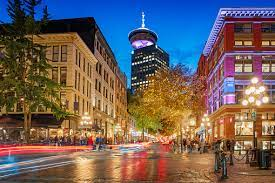
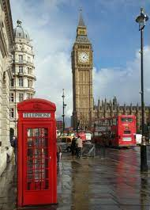
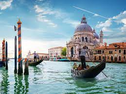
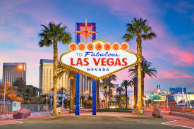
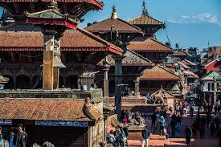

-

Vancouver
Vancouver, a bustling west coast seaport in British Columbia, is among Canada’s densest, most ethnically diverse cities. A popular filming location with thriving art, theatre and music scenes.
-

Sydney
Sydney, capital of New South Wales and one of Australia's largest cities, is best known for its harbourfront Sydney Opera House, with a distinctive sail-like design.
-

London
London, the capital of England and the United Kingdom, is a 21st-century city with history stretching back to Roman times. At its centre stand the imposing Houses of Parliament, the iconic ‘Big Ben’ clock tower and Westminster Abbey, site of British monarch coronations. Across the Thames River, the London Eye observation wheel provides panoramic views of the South Bank cultural complex, and the entire city.
-

Venice
Venice, the capital of northern Italy’s Veneto region. It has no roads, just canals – including the Grand Canal thoroughfare – lined with Renaissance and Gothic palaces.
-

Paris
Also known as the Latin Quarter, the 5th arrondissement is home to the Sorbonne university and student-filled cafes. It's also known for its bookshops, including the famed Shakespeare & Company.
-

New York
New York City comprises 5 boroughs sitting where the Hudson River meets the Atlantic Ocean. At its core is Manhattan, a densely populated borough that’s among the world’s major commercial, financial and cultural centers. Its iconic sites include skyscrapers such as the Empire State Building and sprawling Central Park. Broadway theater is staged in neon-lit Times Square
-

Las Vegas
Las Vegas, often known simply as Vegas, the most populous city in the state of Nevada. The city anchors the Las Vegas Valley metropolitan area and is the largest city within the greater Mojave Desert.
-

Kathmandu
Kathmandu, Nepal's capital, is set in a valley surrounded by the Himalayan mountains. At the heart of the old city is Durbar Square, which becomes frenetic during Indra Jatra, a religious festival featuring masked dances.